Configure the MFT Flow
Set up your Automated File Transfer (AFT) portal with partner organizations, SFTP endpoints, and an inbound many-to-one flow.
The Scenario
A Line of Business (LOB) at headquarters requires a reliable, automated way to receive files from multiple external partner organizations. Rather than managing individual SFTP connections and credentials for each partner, Boomi MFT acts as the central hub — each partner uploads to their own isolated entry point, and MFT automatically routes every file to the correct folder at headquarters.
Path routing & isolation
SFTP Server
Lab Objective: Many-to-One Integration
You will configure a pattern where three partner organizations each have a dedicated SFTP source endpoint in the AFT portal. When a partner uploads a file, MFT routes it automatically to a named subfolder at the headquarters target, ensuring the receiving organization can identify the origin of each file and partners cannot access each other's data.
- Partner 1 ➔ MFT ➔ Headquarters
/Partner1 - Partner 2 ➔ MFT ➔ Headquarters
/Partner2 - Partner 3 ➔ MFT ➔ Headquarters
/Partner3
Technical Architecture
- Sources: Three partner organizations, each with a dedicated Thru SFTP endpoint acting as a secure entry point into the platform
- Target: A headquarters organization with a single SFTP endpoint, receiving all files into separate subfolders mapped per partner
- Routing Logic: Endpoint-to-path mapping in Flow Studio routes each source's files to the correct target subdirectory
- Security: Full partner isolation — each partner connects only to their own entry point and cannot see other partners' data or folders
Lab URL
Lab Access
Create Organizations & Endpoints
In the AFT portal, create four organizations — one for headquarters and one for each of the three partners — then add a Thru SFTP endpoint to each.
Create the Organizations
-
1
In the left-hand navigation, click Organizations.
-
2
Click Add Organization.
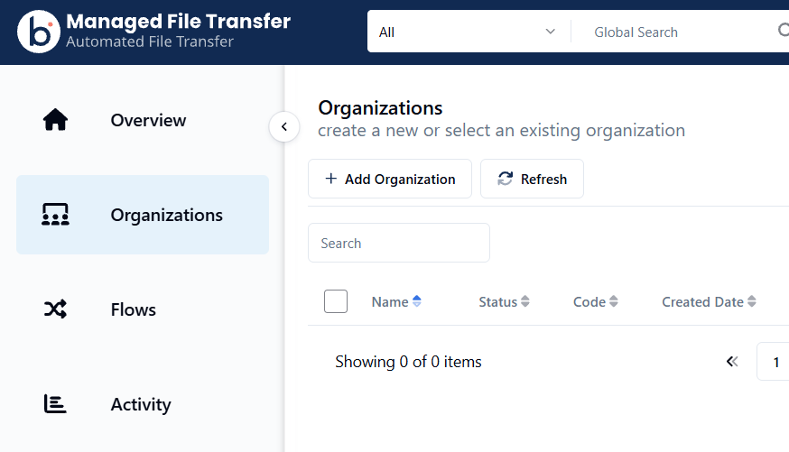
-
3
Enter the name
Headquartersand click Save.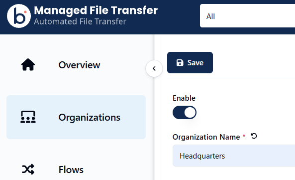
-
4
Repeat steps 2–3 to create three more organizations:
Partner 1,Partner 2, andPartner 3.Once done, your Organizations list should show all four entries.
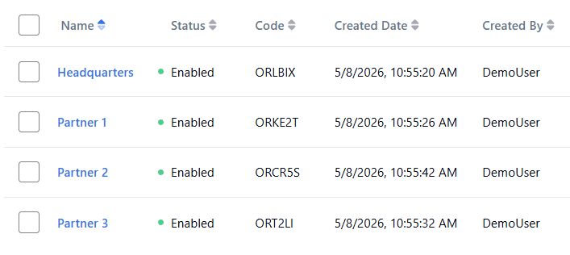
Add Endpoints to Each Organization
Each organization needs a Thru SFTP endpoint. This endpoint represents the organization's secure entry or exit point within the MFT platform — think of it as the SFTP "slot" that the flow will connect to.
-
5
Select the Headquarters organization, then click Endpoints in the organization detail view.
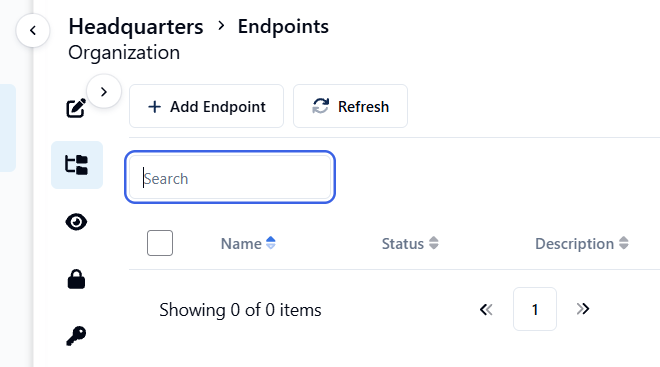
-
6
Click Add Endpoint. Set the Type to
Thru SFTP, name itSFTP Server, and click Save.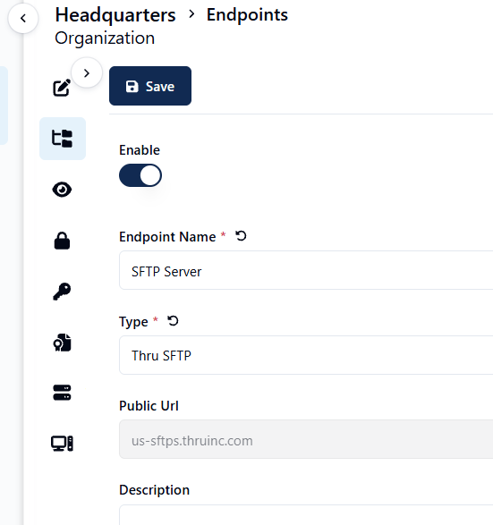
-
7
Repeat steps 5–6 for Partner 1, Partner 2, and Partner 3, giving each the same endpoint type (
Thru SFTP) and name (SFTP Server).
SFTP Server endpoint. Note that you have not needed to create any folders or configure permissions manually — each flow endpoint creates its own isolated entry and exit point automatically.Create the Flow & Subscribe Organizations
Create a new Many-to-One flow in Flow Studio and subscribe all four organizations so they can participate as sources or targets.
Create the Flow
-
1
In the left-hand navigation, click Flows, then click Add Flow.
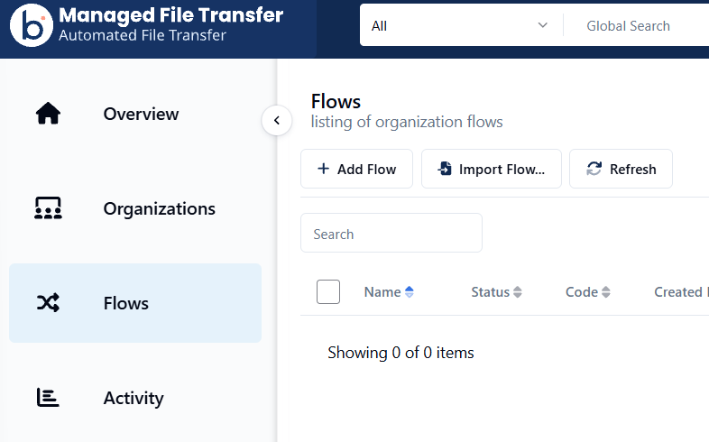
-
2
Name the flow
Many to Oneand click Save.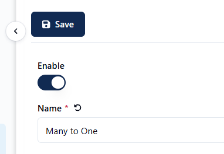
Subscribe Organizations to the Flow
Before you can assign endpoints to the flow, each participating organization must be subscribed. Subscribing an organization grants it access to participate in the flow as a source or target.
-
3
From the Flow Studio view of your new flow, click Add Flow Endpoint in the blue Source window.
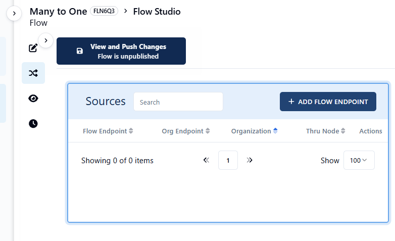
-
4
A prompt will appear indicating that there are no subscribers yet. Click Add Organization Subscriptions.
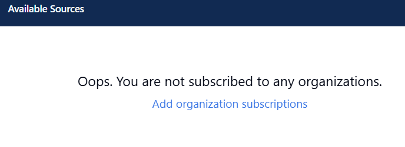
-
5
Select all four organizations (Headquarters, Partner 1, Partner 2, Partner 3) and click Subscribe Selected.
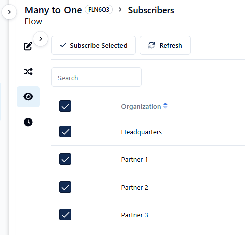
Configure Source Flow Endpoints
Wire up each of the three partner organizations as a source in the flow by selecting their SFTP endpoint in Flow Studio.
Now that all organizations are subscribed, you'll add a flow endpoint for each partner in the blue Source window. Each source endpoint represents one partner's secure upload path into the MFT platform.
-
1
In the Flow Studio Source window, use the Organization dropdown to select
Partner 1.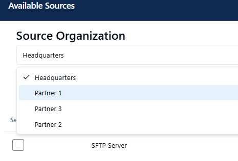
-
2
Select the SFTP Server endpoint for Partner 1, then click Add Flow Endpoint.
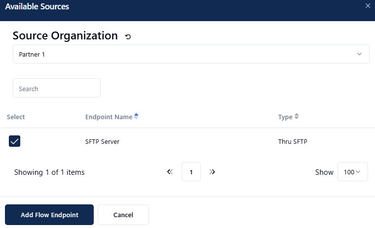
-
3
Repeat steps 1–2 for Partner 2 and Partner 3.
Once all three partners have been added, the Source window in Flow Studio should display all three source endpoints.
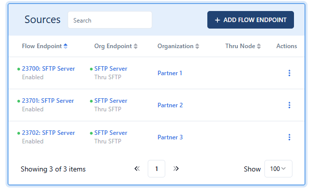
23700: SFTP Server). Rename them to P1, P2, and P3 — this makes the target path mapping in the next step much easier to follow. To rename, click the three-dot menu next to each endpoint and select Edit.
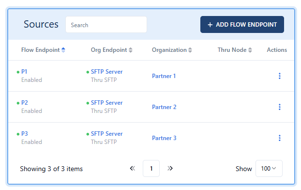
Configure Target & Path Mapping
Add the headquarters SFTP endpoint as the target, define separate delivery folders for each partner, and map each source endpoint to its designated folder.
Add the Headquarters Target Endpoint
-
1
In the green Target window in Flow Studio, click Add Flow Endpoint.
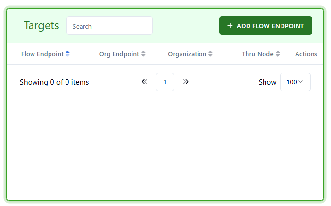
-
2
Select the Headquarters organization and its SFTP Server endpoint, then click Add Flow Endpoint.
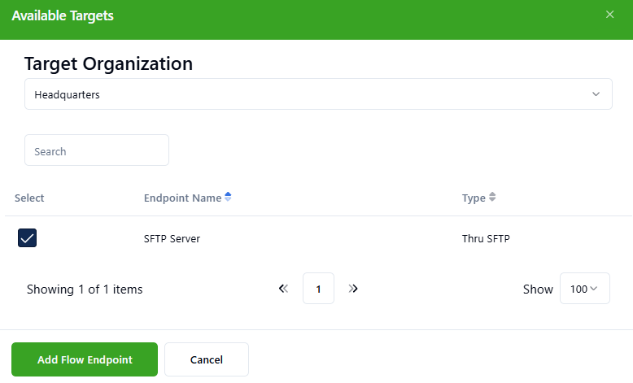
-
3
Flow Studio should now show a source side with three partner endpoints and a target side with the headquarters endpoint.
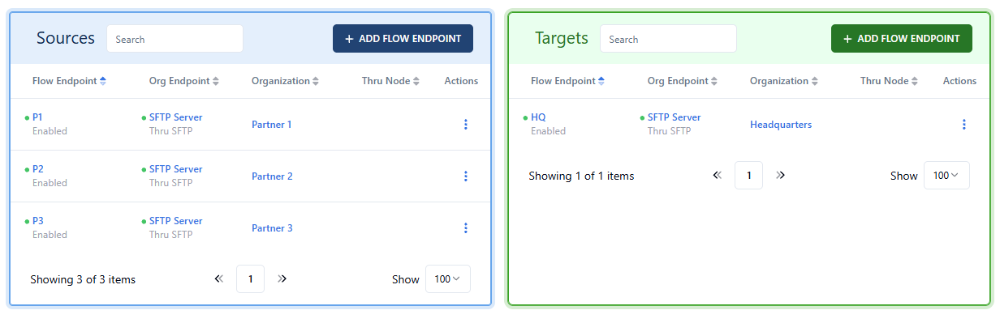
Define Target Folder Paths
To keep files from each partner organized and isolated at the headquarters side, you'll define three subfolders on the target endpoint — one per partner. MFT will deliver each partner's files into the correct subfolder.
-
4
Click on the Headquarters target endpoint in Flow Studio to open the Flow Endpoint Editor.
-
5
Scroll down to find the Endpoint Target Path section. The default path is already pre-filled — click Add Path twice to add two additional paths, giving you three paths in total. Set them to:
/Partner1/Partner2/Partner3
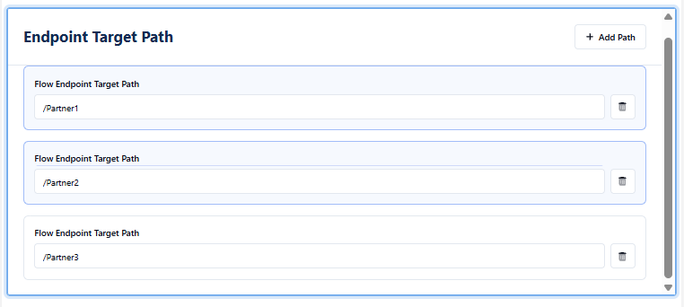
-
6
Click Save Changes at the bottom of the page.
Map Sources to Target Paths
Now you'll tell the flow which partner's files should be delivered to which folder. This is done on the Mapping tab of the target endpoint.
-
7
Click on the Headquarters target endpoint again to reopen the Flow Endpoint Editor, then switch to the Mapping tab.
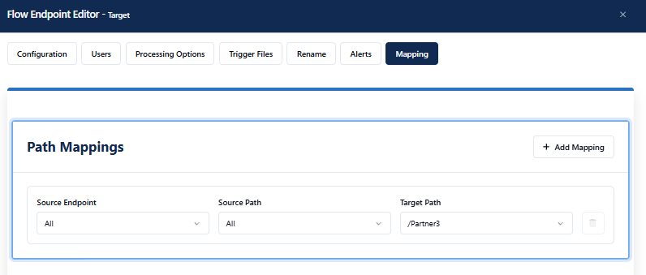
-
8
Add two additional mapping rows (there will already be one). Map each source endpoint to its corresponding target path:
- Partner 1 →
/Partner1 - Partner 2 →
/Partner2 - Partner 3 →
/Partner3
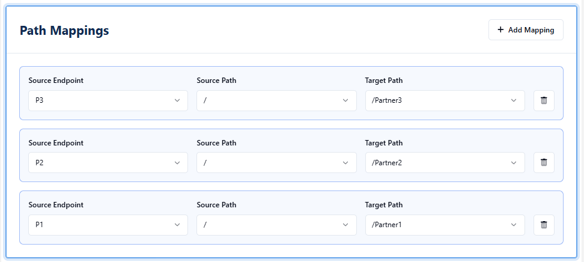
- Partner 1 →
-
9
Click Save Changes.
Publish the Flow
-
10
Return to the main Flow Studio view and click View and Push Changes to publish and activate the flow.
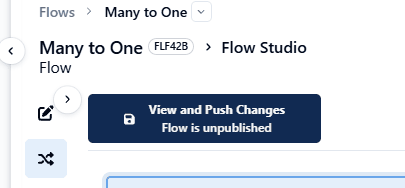
Test the Flow
Upload a file as a partner and verify it arrives in the correct folder at headquarters. Two paths are available: using FileZilla, or using the built-in upload widget directly in the portal.
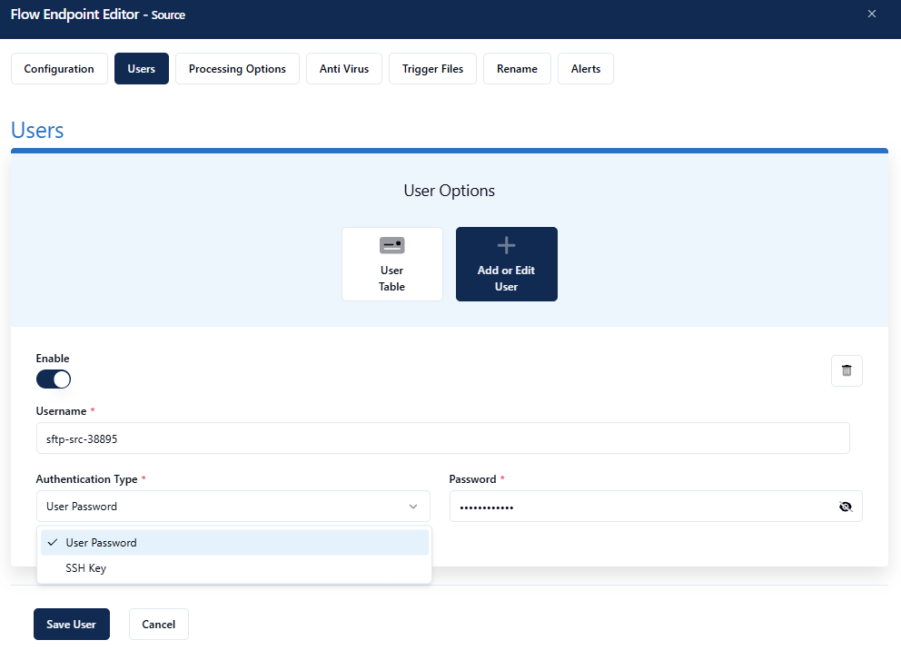
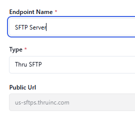
Option A — Test Using FileZilla (or another SFTP client)
If you have FileZilla or a similar SFTP client installed, you can use the AFT portal's built-in export feature to configure your connections automatically rather than entering credentials manually.
-
1
Navigate back to the Flows list. In the Actions column (the three-dot menu ⋯) on your Many to One flow, click the menu.
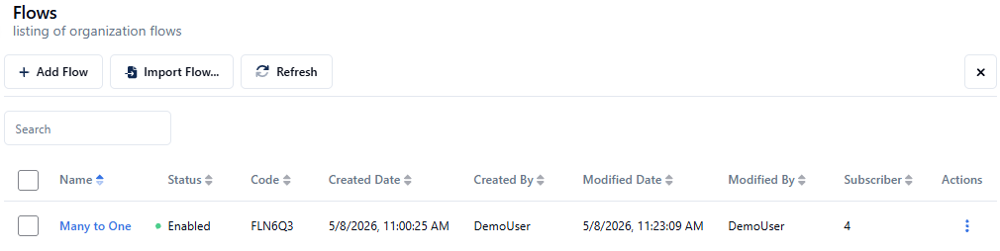
-
2
Click Export to FileZilla Config. This will download an XML file with the name of your flow.
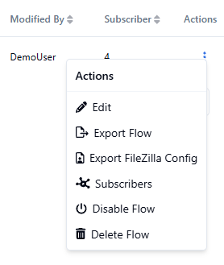
-
3
Open FileZilla and go to File > Import. Select the exported XML file. FileZilla will automatically create connection entries for all source and target endpoints.
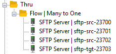
-
4
Connect as one of the partner source users and upload a test file. Once uploaded, return to the AFT portal and navigate to the Activity dashboard.
You will see the uploaded file listed. Notice its status shows Ready for Download — this means it has been routed to the correct target folder, but the headquarters user has not yet retrieved it.
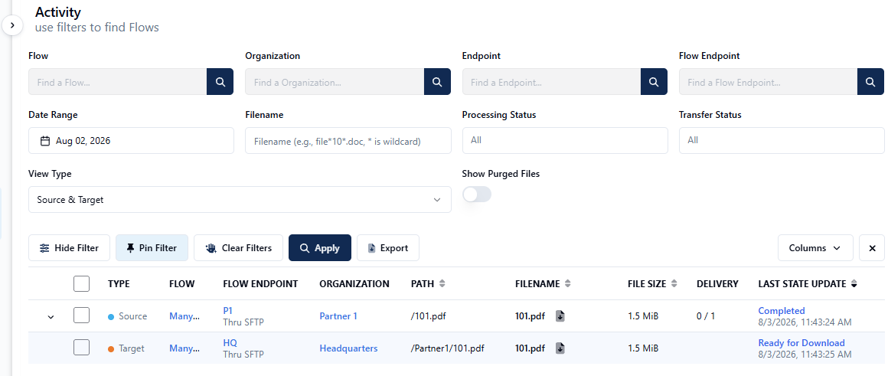
-
5
Switch to the headquarters connection in FileZilla, navigate to the appropriate partner subfolder (e.g.
/Partner1), and download the file. -
6
Refresh the Activity view in the portal. The status should now show Completed.
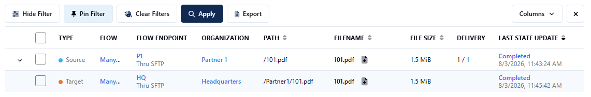
-
7
Click the word Completed next to the target entry. This opens the Transfer Status Details panel, which shows the complete lifecycle of the file — from upload through routing to delivery and download.
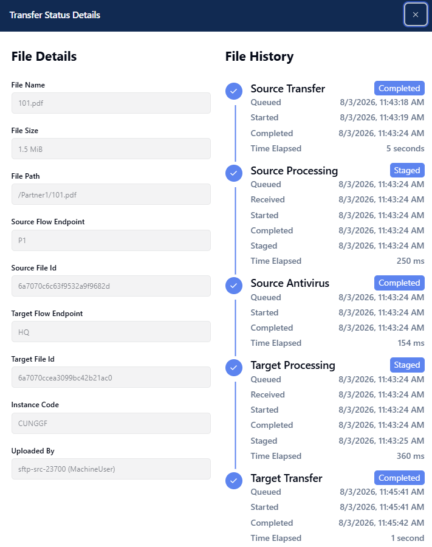
Option B — Test Using the Built-In Upload Widget
If you don't have an SFTP client available, you can upload files directly from the AFT portal using the manual upload widget. This option is built into every source endpoint.
-
1
Navigate to your flow in Flow Studio. In the blue Source window, click the three-dot menu (⋯) on one of the partner source endpoints and select Upload Files.
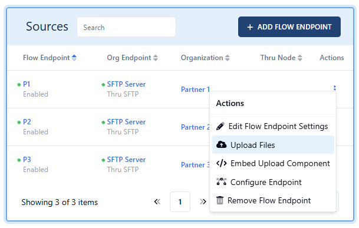
-
2
An upload widget will appear. Drag and drop a file (or click to browse) and upload it.
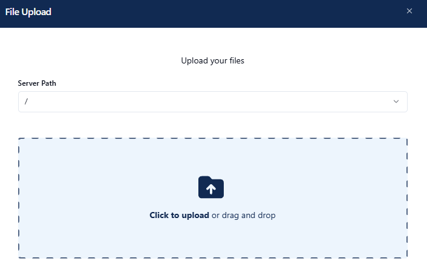
-
3
Navigate to the Activity dashboard to review the transfer. The Transfer Status Details will show that the file was uploaded manually and record the full lifecycle including routing and delivery.
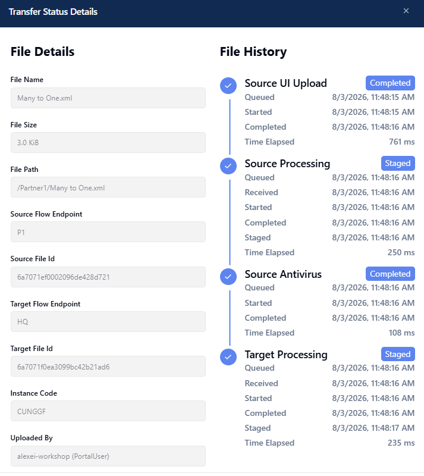
Add PGP Encryption
Extend the flow with end-to-end PGP encryption. Partners will encrypt files using the headquarters public key, and MFT will automatically decrypt them at the target — no manual decryption required by the receiving party.
Generate a PGP Key Pair for Headquarters
-
1
Navigate to Organizations and select Headquarters. Then click PGP Keys.
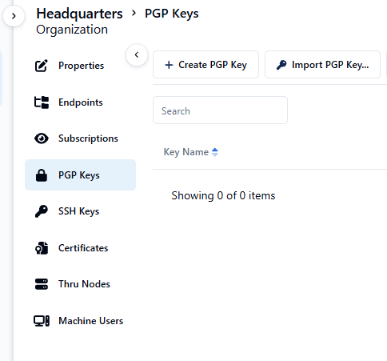
-
2
Click Create PGP Keys, fill in the required fields (name, email, and a passphrase), and click Generate Keys.
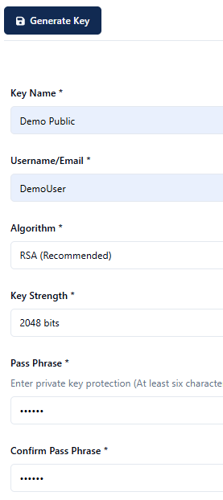
-
3
The key pair will be generated. Download both the public and private keys — you will need them in the following steps.
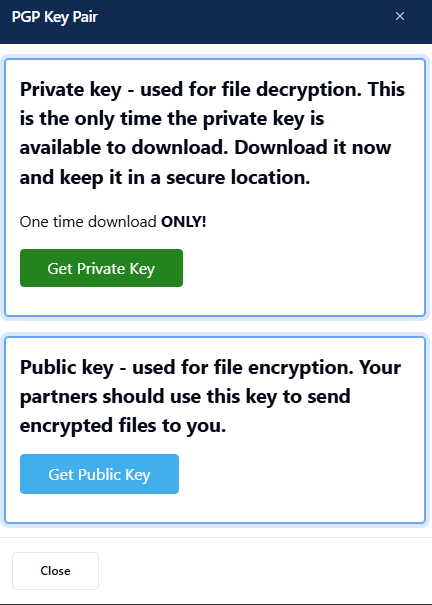
Import the Private Key into Headquarters
-
4
Still on the Headquarters PGP Keys page, click Import PGP Key.
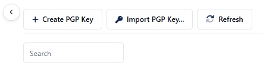
-
5
Drag and drop (or browse to) the private key file you downloaded in step 3. Name it
Demo Private, set a passphrase, and click Import.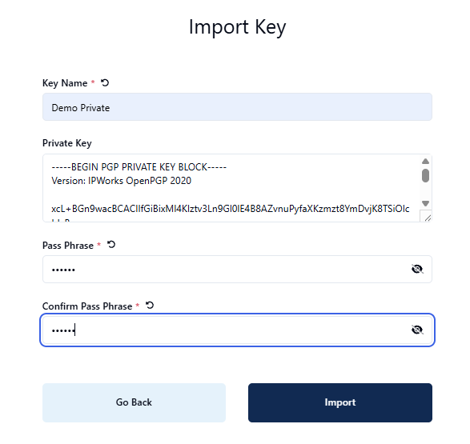
Distribute the Public Key to Each Partner
Each partner organization needs the headquarters public key so they can encrypt files before uploading. Import the public key into each partner organization.
-
6
Navigate to Partner 1, open PGP Keys, and click Import PGP Key. Import the headquarters public key file.
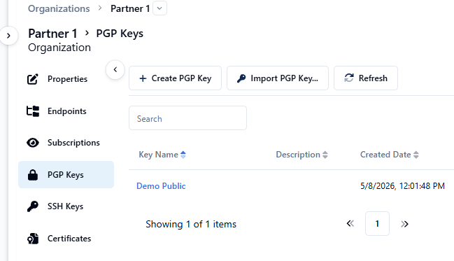
-
7
Repeat step 6 for Partner 2 and Partner 3.
Configure Encryption on the Source Endpoints
Now you'll configure each partner's flow endpoint to encrypt outbound files using the public key you just imported.
-
8
Return to Flow Studio and click on the Partner 1 source endpoint to open the Flow Endpoint Editor. Select the Processing Options tab and set the processing type to Encryption. Then select the public key from the dropdown and click Save Changes.
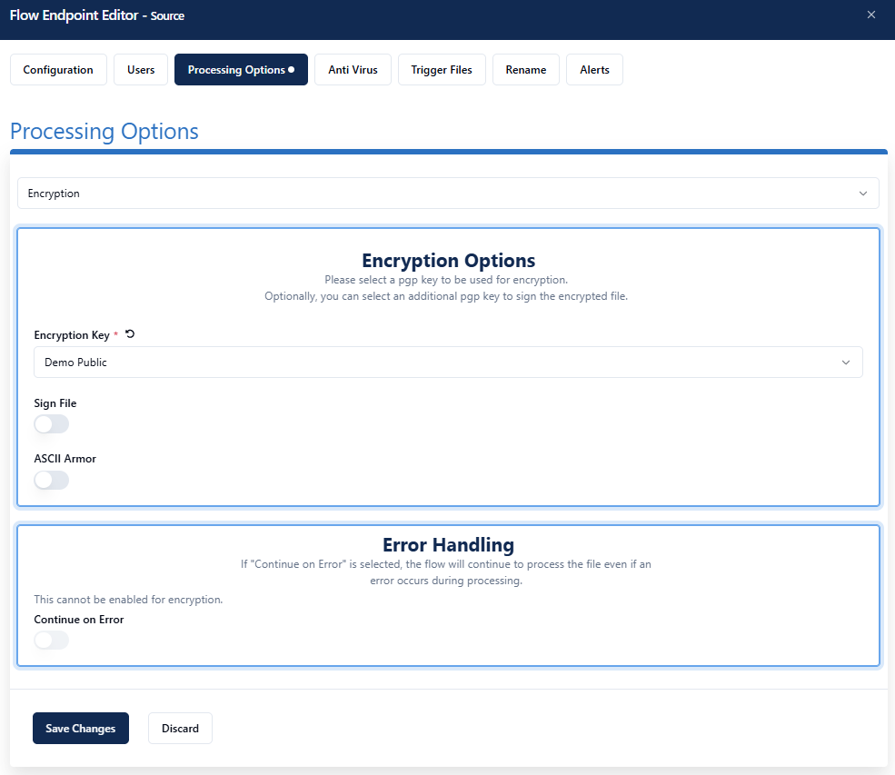
-
9
Repeat step 8 for the Partner 2 and Partner 3 source endpoints.
Configure Decryption on the Target Endpoint
-
10
Click on the Headquarters target endpoint in Flow Studio to open the Flow Endpoint Editor. Select the Processing Options tab, set the processing type to Decryption, and select the
Demo Privatekey. Click Save Changes. -
11
Back in Flow Studio, click View and Push Changes to apply the updated flow configuration.
Verify Encryption in the Activity Dashboard
-
12
Upload a file through one of the partner sources (using FileZilla or the upload widget, as in Step 5). Then navigate to the Activity dashboard and open the Transfer Status Details for that transfer.
The lifecycle view will now include additional steps showing encryption at the source and decryption at the target, confirming the full PGP processing chain is working end-to-end.
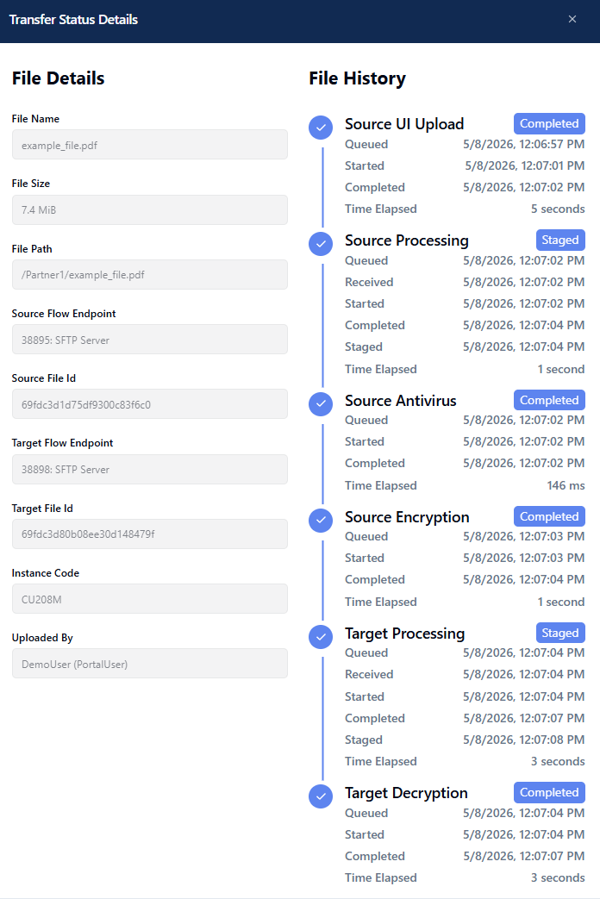